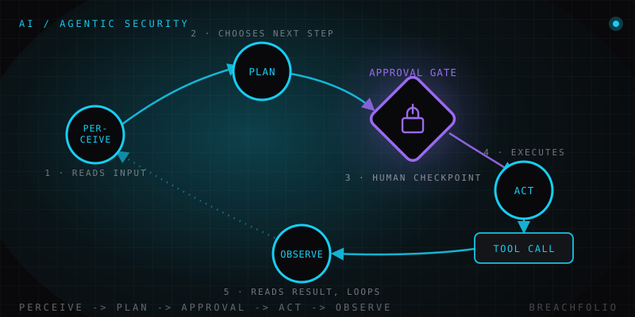

Seguridad de IA agéntica: qué cambia cuando el LLM puede actuar, no solo hablar.
Un chatbot que da malos consejos es una molestia. Un agente que actúa sobre un mal consejo –envía el correo, borra el archivo, gasta el dinero– es un incidente. Esto es lo que cambia de verdad.
Un LLM conversacional produce texto. Le haces una pregunta, responde, y una persona decide qué hacer con esa respuesta: copiarla en un correo, seguir el consejo o ignorarlo por completo. Un sistema agéntico es distinto en un aspecto concreto y de gran calado: puede llamar a herramientas y APIs, navegar por la web, leer y escribir archivos, y encadenar varios de esos pasos en busca de un objetivo, sin que una persona revise o apruebe cada paso individual por el camino. Pídele a un chatbot que «limpie mis facturas antiguas» y te dirá cómo hacerlo; pídeselo a un agente y puede que directamente abra tu herramienta de contabilidad, encuentre las facturas que considera antiguas y las borre, interpretando bien tu intención la mayoría de las veces, y de vez en cuando no. Ya cubrimos el espectro de fondo –qué separa realmente a un LLM en crudo, a un chatbot y a un agente– en LLM vs chatbot vs agente. Este artículo trata de qué cambia, desde el punto de vista de la seguridad, en cuanto un sistema se sitúa en el extremo «agente» de ese espectro.
Por qué esto cambia el modelo de riesgo, no solo la capacidad
Es tentador archivar la «seguridad de IA agéntica» bajo el mismo epígrafe que la seguridad ordinaria de los LLM y pasar página. Eso resta importancia a lo que de verdad es diferente. Con un chatbot normal, el peor desenlace de una salida manipulada o alucinada es texto malo: una persona lo lee y, en principio, tiene la oportunidad de notar que algo no cuadra antes de actuar sobre ello. Ese paso de revisión es una red de seguridad real, aunque imperfecta.
Con un agente, la salida no es solo texto a la espera de ser evaluado: puede ser la acción. Una respuesta manipulada no necesita convencer a una persona de hacer algo dañino; puede disparar la llamada a la herramienta directamente, y esa llamada ya se ha ejecutado para cuando alguien mira un registro. El correo se envía. El archivo se borra. La compra se realiza. No hubo un paso intermedio en el que una persona pudiera haberlo detectado, porque el sistema se diseñó precisamente para eliminar ese paso.
Esta es exactamente la razón por la que la inyección de prompts se vuelve mucho más peligrosa en contextos agénticos. La inyección siempre ha consistido en lograr que un modelo trate contenido no confiable como si fuera una instrucción. Contra un chatbot, una inyección exitosa produce una respuesta rara o manipulada: molesta, pero inerte hasta que una persona actúa sobre ella. Contra un agente con acceso a herramientas, esa misma instrucción inyectada tiene algo contra lo que ejecutarse. La vulnerabilidad no cambia; lo que cambia es aquello a lo que está conectada. Una instrucción oculta enterrada en una página web que el agente está resumiendo, o en un correo que le han pedido que clasifique, antes era una curiosidad. En cuanto ese agente también puede enviar una respuesta, mover un archivo o cursar un pedido, esa misma instrucción oculta es un exploit que funciona, y se dispara en el momento en que el modelo la lee, no después de que alguien haya tenido ocasión de contrastar la salida.
| Qué cambia | Chatbot | Agente |
|---|---|---|
| Salida | Texto a la espera de que una persona lo evalúe | Puede disparar la llamada a la herramienta directamente |
| Paso de revisión | Una persona puede detectar una mala respuesta antes de actuar | No hay paso humano entre la decisión y la ejecución |
| Inyección de prompts | Produce una respuesta manipulada, inerte hasta que alguien actúa sobre ella | Tiene algo contra lo que ejecutarse y se dispara en el momento en que el modelo la lee |
| Momento de la consecuencia | Visible antes de que pueda causar un daño real | Ya se ha ejecutado para cuando alguien mira un registro |
Los nuevos modos de fallo
Un puñado de patrones de fallo aparecen específicamente cuando los sistemas se vuelven agénticos, y conviene nombrarlos con claridad en lugar de tratarlos como un vago «riesgo de la IA».
- Agencia excesiva. A un agente se le conceden más permisos o herramientas de los que su tarea real requiere: un asistente de investigación que además puede enviar correos, un resumidor de documentos que además puede borrar archivos. Cuando algo sale mal, el radio de impacto lo define todo lo que el agente podía hacer, no todo lo que se suponía que debía hacer.
- Uso indebido de herramientas y encadenamiento inseguro. Acciones individualmente seguras pueden combinarse en una secuencia insegura. Leer un documento es seguro. Enviar un correo es seguro. Un agente que lee un documento y luego, en la misma cadena de razonamiento, envía su contenido por correo a una dirección que dedujo del propio texto del documento –porque eso es lo que el contenido daba a entender que debía hacer– acaba de exfiltrar datos mediante dos acciones que, por separado, superarían una revisión de seguridad.
- Supervisión humana insuficiente. Toda la propuesta de valor de un agente es que actúa sin que una persona apruebe cada paso. Ese es también el riesgo: sin una puerta de aprobación deliberada en algún punto del bucle, no hay ningún momento en el que una persona pueda detener una acción de peso antes de que ocurra.
- Fallos en cascada en sistemas multiagente. Cuando se encadenan agentes –la salida de un agente alimenta la entrada de otro–, un único agente comprometido, confundido o simplemente equivocado puede pasar información incorrecta aguas abajo a un agente que no tiene motivos para desconfiar de ella. El fallo no queda contenido; se propaga a través de cuantos agentes estén conectados para confiar unos en otros.
Ninguno de estos cuatro es exótico. Son variaciones de modos de fallo que los equipos de seguridad llevan décadas manejando en otros contextos: cuentas de servicio sobreaprovisionadas, tareas por lotes sin revisar, cadenas de confianza frágiles entre microservicios. Lo que cambia es la rapidez con la que un agente puede pasar de «se le concedió demasiado acceso» a «usó ese acceso», porque todo el sentido del diseño es saltarse el paso en el que una persona normalmente se habría dado cuenta.
Este patrón se volvió lo bastante común y de peso como para que OWASP haya publicado guías específicas para sistemas de IA agéntica, separadas de su guía general para aplicaciones LLM: una señal de que la comunidad de seguridad ve esto como una categoría de problema propia, no como una nota al pie de la inyección de prompts.

MCP y la creciente superficie de conexión de herramientas
Parte de lo que ha hecho prácticos a los sistemas agénticos es la aparición de formas estandarizadas de que un modelo se conecte a herramientas, fuentes de datos y servicios externos, en lugar de que cada integración sea a medida. Esa estandarización es genuinamente útil para quien construye –significa que un agente puede enchufarse a un ecosistema creciente de herramientas sin un conector hecho a medida para cada una– y también significa que cada una de esas conexiones es un punto en el que se toma una decisión de confianza, a menudo de forma implícita:
- ¿Esta herramienta obtiene acceso de lectura, de escritura, o ambos?
- ¿Ve todo el contexto de la conversación o un subconjunto acotado?
- ¿Sabe siquiera quien monta la integración qué permisos acaba de conceder?
A medida que crece el número de herramientas conectadas, crece también el número de lugares donde una conexión mal acotada puede convertirse silenciosamente en el eslabón más débil de toda la cadena. Profundizamos en esa capa concreta, y en los riesgos que trae una red creciente de conexiones estandarizadas, en MCP: la nueva superficie de ataque.
Qué mitigaciones ayudan de verdad
Nada de esto significa que los sistemas agénticos sean imposibles de construir con seguridad: significa que las mitigaciones tienen que encajar con los modos de fallo reales de arriba, no con consejos genéricos de «ten cuidado con la IA».
- Acotar con privilegio mínimo. Cada herramienta y API que un agente pueda llamar debería acotarse al acceso mínimo que la tarea realmente requiere, no al máximo que algún día pudiera resultar cómodo.
- Una puerta de aprobación firme para acciones irreversibles o de alto impacto. Enviar, borrar, comprar, conceder accesos: cualquier cosa que no pueda deshacerse trivialmente debería pausarse para obtener el visto bueno explícito de una persona, por muy seguro que parezca el razonamiento del agente.
- Aislar los entornos de ejecución en sandbox. La capacidad de un agente para ejecutar código, tocar un sistema de archivos o alcanzar una red debería estar contenida, de modo que una mala decisión dentro del sandbox no se convierta en un mal desenlace fuera de él.
- Registrar cada llamada a herramienta y cada decisión. Si ocurre un incidente, «qué leyó el agente y qué decidió hacer al respecto» tiene que ser una pregunta que puedas responder de verdad, no una que solo puedas adivinar.
- Tratar el contenido ingerido como entrada no confiable. Documentos, correos, páginas web, respuestas de API: cualquier cosa que el agente lea y que un tercero haya podido influir debería tratarse como datos sobre los que razonar, nunca como instrucciones que seguir.
- Volver a probar el comportamiento de seguridad tras cada actualización del modelo. Las defensas ajustadas a los modos de fallo de un modelo no se trasladan automáticamente a la siguiente versión; un modelo nuevo puede responder de forma distinta a los mismos prompts, de maneras que rompen silenciosamente supuestos de los que dependían tus salvaguardas.
La seguridad de IA agéntica se sitúa en la intersección de la seguridad de la IA y la ingeniería de seguridad clásica –privilegio mínimo, defensa en profundidad, auditabilidad–, ninguna de las cuales es una idea nueva. Lo nuevo es la velocidad y la autonomía con las que los agentes pueden actuar sobre una mala decisión antes de que nadie se dé cuenta de que era mala. Los principios que mantienen seguros a los agentes son los mismos que llevan décadas manteniendo seguros a los sistemas de software; solo que ahora el coste de saltárselos es mayor, porque hay menos tiempo entre una decisión defectuosa y una consecuencia en el mundo real.
Preguntas frecuentes
¿Qué diferencia a un sistema de IA agéntica de un chatbot normal en términos de seguridad?
¿Por qué la inyección de prompts es más peligrosa en agentes que en chatbots?
¿Qué es la "agencia excesiva" en un agente de IA?
¿Qué mitigaciones ayudan de verdad a proteger un sistema agéntico?
Daniel A. y Óscar S. llevan Breachfolio, un sitio pequeño e independiente sobre seguridad e IA. Este artículo se redactó con asistencia de IA y una persona lo revisó antes de publicarlo. Escribimos a partir de documentación, fuentes de los fabricantes e investigación publicada, no de pruebas de laboratorio propias, y enlazamos la fuente en la propia frase que se apoya en ella. Cómo trabajamos · Quiénes somos